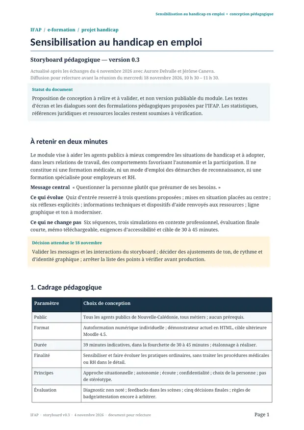
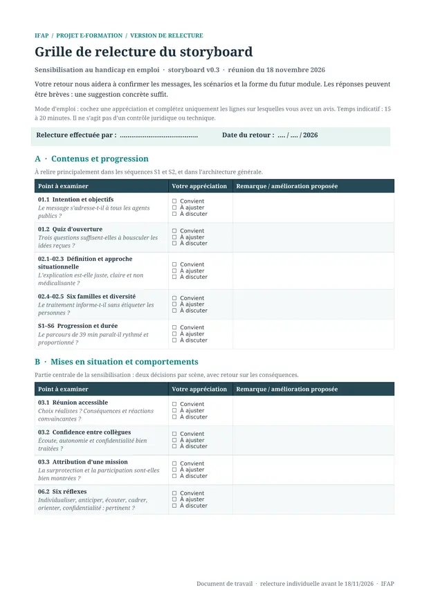

À tester · v0.7
Démonstrateur interactif
Le prototype
Parcourir les écrans, faire des choix, observer les feedbacks et apprécier l’ergonomie actuelle.
Suivez la conception du module de sensibilisation au handicap en emploi, découvrez le prototype et contribuez à la prochaine version.
Les contenus et le démonstrateur sont disponibles. Le prochain jalon est la consolidation des retours sur le storyboard et l’expérience proposée.
Public, objectifs, format et périmètre de sensibilisation définis.
Documents de Jérôme exploités ; points sensibles recensés.
Storyboard v0.3 actualisé après la réunion du 4 novembre.
Prototype HTML v0.7, encore à faire évoluer sur la forme.
Relecture individuelle par Aurore et Jérôme, puis échange le 18 novembre.
Nouvelle version visuelle et pédagogique (v0.8 envisagée).
Vérifications, accessibilité, SCORM et recette Moodle.
Les échanges ont confirmé la direction pédagogique. Place à la clarté des messages, à l’impact des scènes et au confort d’utilisation.
Lire le storyboardMercredi · 10 h 30 – 11 h 30
Restitution de la relecture et décisions pour la suite.
Sélectionnez une séquence pour voir son intention. Les durées restent indicatives et seront vérifiées en test.
Trois questions d’ouverture pour faire émerger les représentations, sans notation ni chronomètre.
Choisissez votre profil pour voir les points d’attention proposés. Chacun peut naturellement commenter l’ensemble du dispositif.
Un parcours de relecture ciblé, pour contribuer efficacement sans parcourir tout le dispositif de la même manière.
Vérifier la justesse des contenus et le respect des personnes dans les situations.
Accès direct aux documents de travail et au démonstrateur. Les versions sont clairement indiquées.
Parcourir les écrans, faire des choix, observer les feedbacks et apprécier l’ergonomie actuelle.
Public, objectifs, périmètre, contraintes et points ouverts. Antérieur aux arbitrages du 4 novembre.


Notre objectif est de transformer des observations de relecture en décisions claires pour la version suivante.
Nous examinerons d’abord les messages incontournables, puis les ajustements d’expérience utilisateur et les éventuelles corrections de forme.